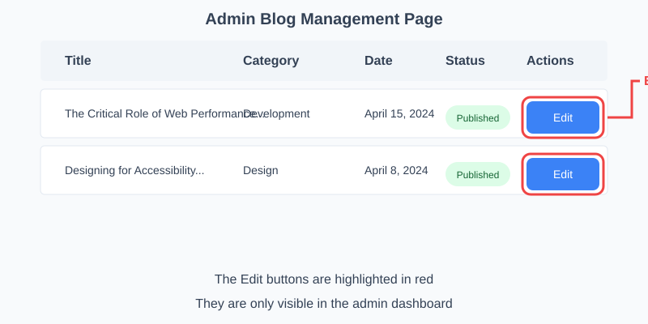

Navigate to admin/login.html and login with username: admin and password: admin123
After logging in, click on "Blog Posts" in the sidebar menu
The edit buttons are in the "Actions" column of the blog posts table
Important: The edit buttons are ONLY visible in the admin dashboard, not on the public-facing blog pages.
The edit button looks like this:

The edit buttons are highlighted in red in the Actions column